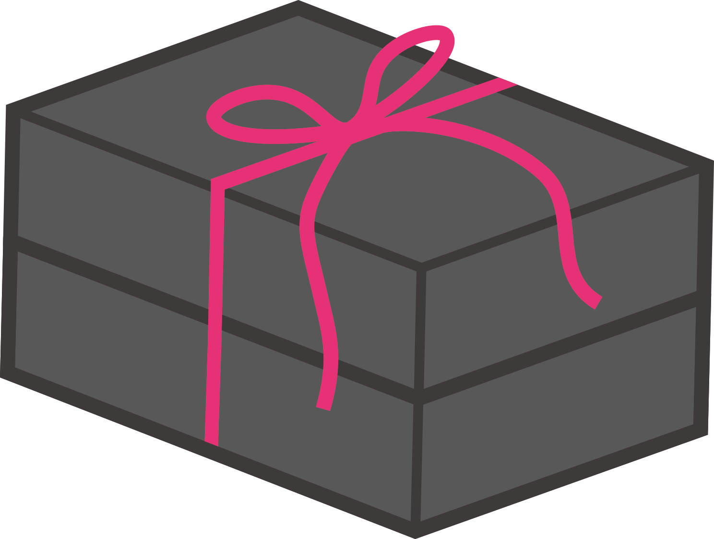
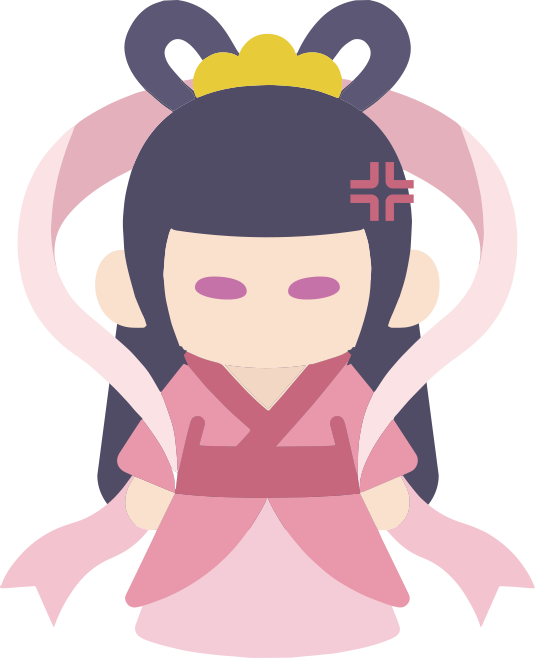

竜宮城を満喫して帰ってきたばかりのウラシマ。
オトヒメから「開けてはいけない」と言われてこの箱を貰ったけど...。
気になるから開けちゃおう！


竜宮城を満喫して帰ってきたばかりのウラシマ。
オトヒメから「開けてはいけない」と言われてこの箱を貰ったけど...。
気になるから開けちゃおう！

箱を開けた瞬間、白い煙があたりを包み、気づけば僕は竜宮城にいた。
色々な記憶が薄れている気がする。ただ、竜宮城に前に来たことがあるのは覚えている。
「...なんでまたここに来たんだろう？」
思わずつぶやいた時、声が僕の後ろからした。
「箱を開けてしまったのですか！？開けてはいけないと言ったでしょう！」
後ろを向くと、怒った顔のオトヒメが居た。
「あなたが開けた箱に入っていた煙は人間を急速に老けさせてしまう煙...。ここに長くいると死んでしまいますわ！」
「えっ！？じゃあなんでそんな危険な箱を僕に...」
「今はそんなことを気にしている場合じゃありません！ええっと、どこだったかしら...。」
オトヒメは忙しそうに駆け巡り、何かを探している。
「...あった！ウラシマ、あなたがこの状況で助かるには、この暗号を解いて私に答えを伝えるのです。」
「ただし、ただ解いて良いわけではありません。暗号を解くときは、
...絶対に守るのですよ？」

なんだかよくわからないが、今の僕にはその暗号を解くしか選択肢はないようだ...。